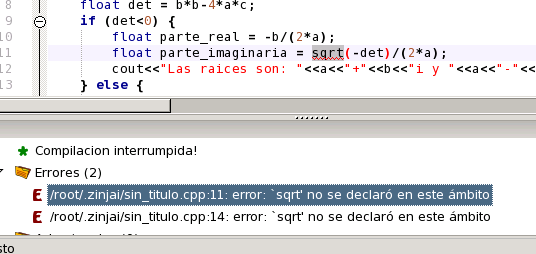
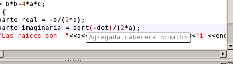

Haga doble click sobre el error en el panel de compilación y observe como en el editor el cursor se desplaza hacia la linea que lo provocó, y subraya con rojo la función a la cual el mensaje de error hace referencia.

Para solucionar el error debería incluir la cabecera cmath al principio del archivo. ZinjaI puede hacer esto por usted. Presione Ctrl+H y observe como ZinjaI añade la linea por usted. ZinjaI busca en sus estructuras de datos si conoce alguna cabecera que declare esta función y en caso afirmativo revisa si no se encuentra la linea #include correspondiente (y el "using namespace std;" de ser necesario) y la añade automáticamente junto con las demás cabeceras.

Volver... Continuar...